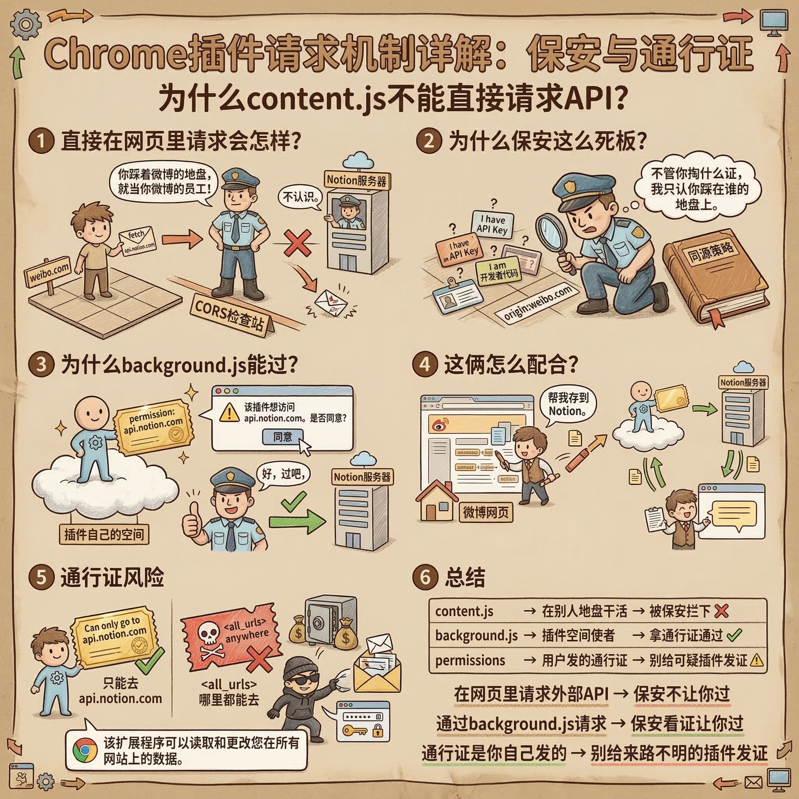

来自同学们作业里的灵魂拷问
能写，fetch('https://api.notion.com/...') 一行就写完了。但跑起来你会发现——请求直接失败，连 Notion 服务器的门都没摸到。
content.js 是你的代码没错，但它跑在别人的网页里。浏览器不管你代码是谁写的，它只认地盘：你在知乎的页面上发请求，浏览器就认为你是知乎。
然后浏览器去问 Notion："知乎找你要数据，你认识吗？"Notion 说："不认识。"浏览器说："那不好意思，拦了。"
这个机制叫 CORS。你可以理解成浏览器是个保安，死板但尽职——你站在知乎的地盘上，就只能算知乎的人。不管你掏出什么工牌、喊什么口号，保安只看你脚下踩的是谁的地。
请求压根没到 Notion 的服务器，保安在门口就给你挡回去了。

因为 background.js 不站在任何网页的地盘上——它跑在插件自己的空间里。而且用户安装插件的时候，Chrome 弹了个窗："这个插件想访问 api.notion.com，你同意吗？"用户点了同意，相当于给 background.js 办了一张通行证。
保安看到这张通行证：行，过吧。
所以 content.js 负责在别人家里干活（划词、弹浮层），遇到要跟外面联系的事情，就发个消息给 background.js："帮我把这段话存到 Notion。"background.js 拿着通行证去请求，拿到结果再传回来。
不是。通行证是用户自己发的，发了就真的有效。
这个插件通行证上写的是"只能去 Notion"——合理。但如果一个插件通行证上写的是"哪儿都能去"（<all_urls>），那它就真的哪儿都能去——你在任何网页上看的东西、输入的内容，它理论上都能偷偷读到、发到别的地方。
所以 Chrome 每次安装插件都用大字提醒你"此扩展可以读取和更改你在所有网站上的数据"——翻译成人话就是：你确定你信得过它吗？信得过就装，出了事算你自己的。
三句话总结：
- 网页里请求外部 API → 保安拦住，不让过
- background.js 请求 → 有通行证，保安放行
- 通行证是你自己发的 → 别给来路不明的插件发通行证
代码里各种括号确实容易晕，其实就四种：
| 符号 | 干什么的 | 例子 |
|---|---|---|
() |
调用函数，或者传参数 | console.log("你好") — 调用 log 函数，传了一句话进去 |
{} |
包一段代码，或者表示一个数据包（对象） | if (x) { ... } — 条件成立就执行花括号里的代码 |
[] |
列表（数组），放一堆东西 | ['标签', 'Tags', 'tags'] — 装了三个名字的列表 |
=> |
箭头函数，定义函数的简写 | (text) => { ... } — 收到 text，执行后面的代码 |
不用死记，看多了自然就认识了。就像你刚学英语的时候分不清各种标点，看多了自然知道句号和逗号的区别。
那些颜色是编辑器（VS Code）自动加的，叫语法高亮。不同颜色代表不同角色：
import、const、function这些颜色不影响代码运行，纯粹是视觉辅助。就像课本里用不同颜色标注标题、正文、注释一样，帮你一眼扫出每个词是什么角色。换个编辑器主题，颜色就全变了，但代码还是一样的。